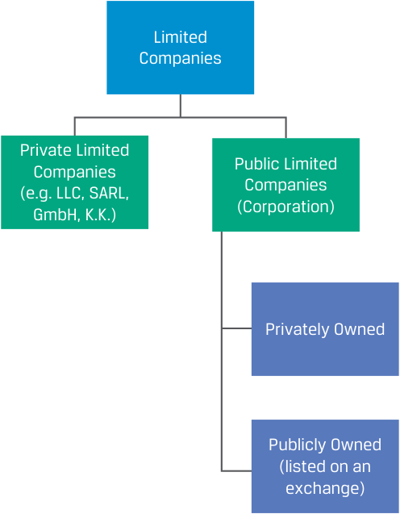
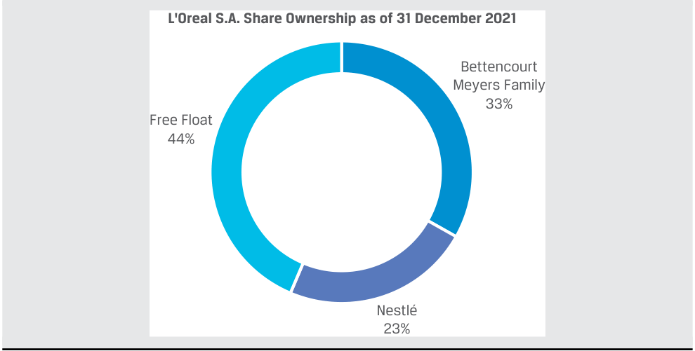
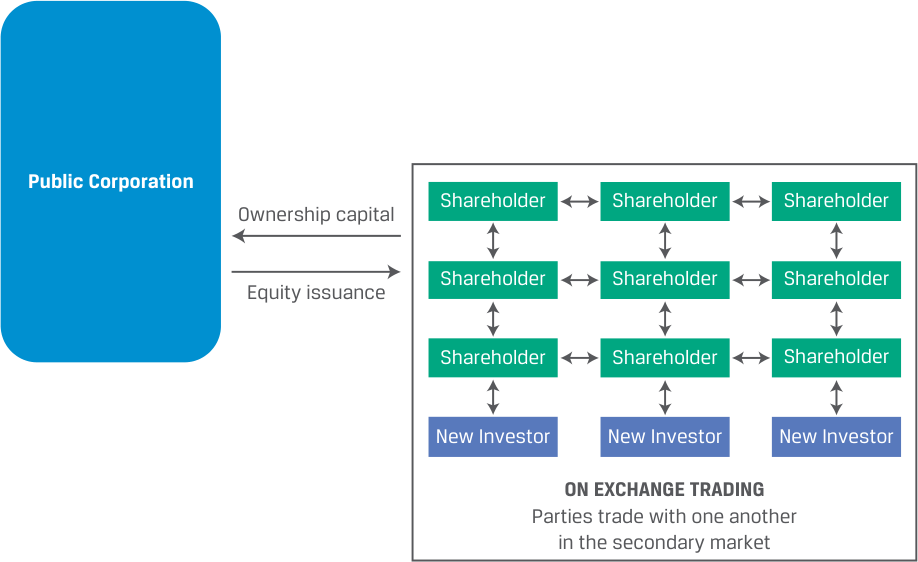
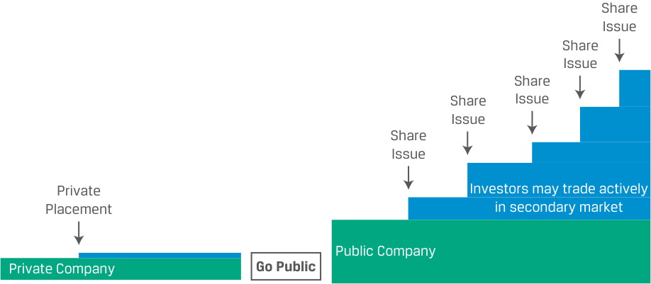
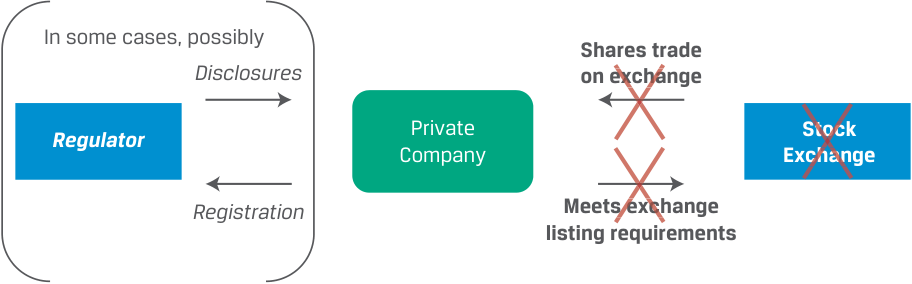
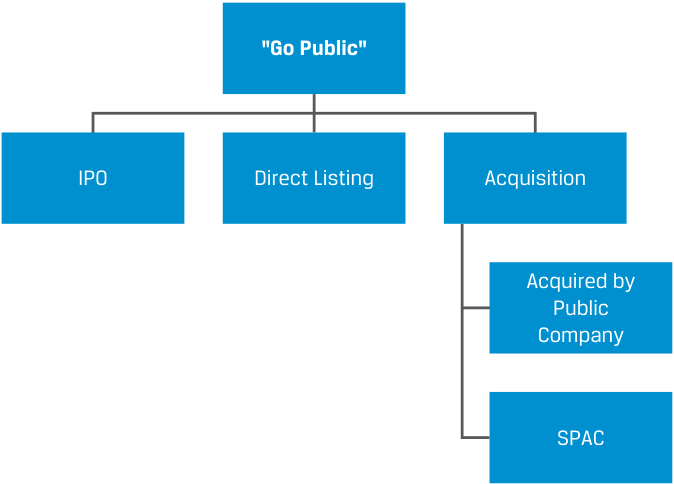
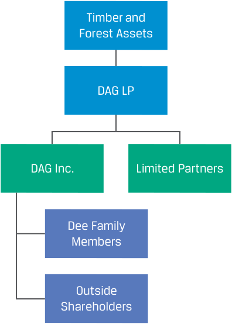

Learning Module 1 Organizational Forms, Corporate Issuer Features, and Ownership - Part 3: Publicly vs. Privately Owned Corporate Issuers
Volume 3: Corporate Issuers
Learning Module 1 Organizational Forms, Corporate Issuer Features, and Ownership
Part 3/3: Publicly vs. Privately Owned Corporate Issuers (PDF Pages 29–44)
Tập 3: Tổ chức phát hành doanh nghiệp (Corporate Issuers)
Học phần 1: Các hình thức tổ chức doanh nghiệp, đặc điểm của tổ chức phát hành doanh nghiệp và quyền sở hữu (Organizational Forms, Corporate Issuer Features, and Ownership)
Phần 3/3: Tổ chức phát hành doanh nghiệp thuộc sở hữu đại chúng so với sở hữu tư nhân (Publicly vs. Privately Owned Corporate Issuers) (Trang PDF 29–44)
-
C. The owners of the corporation are not legally distinct from the corporation.
-
Solution:
-
C. Chủ sở hữu của công ty cổ phần không tách biệt về mặt pháp lý với công ty cổ phần.
-
Lời giải:
C is correct. A corporation is a legally separate entity from its owners.
C là đáp án đúng. Công ty cổ phần (corporation) là một thực thể tách biệt về mặt pháp lý (legally separate entity) với các chủ sở hữu của nó.
A is incorrect because corporate income is taxed at both the corporate and personal levels unless the company pays zero dividends.
A sai vì thu nhập của công ty cổ phần bị đánh thuế ở cả cấp độ doanh nghiệp và cấp độ cá nhân trừ khi công ty không trả cổ tức.
B is incorrect because shareholders are not required to exercise management control over the company. While in some cases, a large shareholder may serve as senior management or be on the board of directors, most shareholders do not take on management responsibilities.
B sai vì các cổ đông không bắt buộc phải thực hiện quyền kiểm soát quản lý đối với công ty. Mặc dù trong một số trường hợp, một cổ đông lớn có thể giữ vị trí quản lý cấp cao hoặc tham gia hội đồng quản trị, nhưng hầu hết các cổ đông không đảm nhận trách nhiệm quản lý.
PUBLICLY VS. PRIVATELY OWNED CORPORATE ISSUERS
TỔ CHỨC PHÁT HÀNH DOANH NGHIỆP THUỘC SỞ HỮU ĐẠI CHÚNG SO VỚI SỞ HỮU TƯ NHÂN (PUBLICLY VS. PRIVATELY OWNED CORPORATE ISSUERS)
4
4
compare publicly and privately owned corporate issuers
- So sánh các tổ chức phát hành doanh nghiệp thuộc sở hữu đại chúng và sở hữu tư nhân (compare publicly and privately owned corporate issuers)
For corporations, “public” and “private” (or “listed” and “unlisted”) are often defined by whether the company’s shares are listed and tradeable on an exchange . Somewhat confusingly, this is different from the discussion of private and public limited companies in an earlier lesson; most public or listed companies are public limited companies, but public limited companies are not obliged to list their shares on an exchange.
Đối với các công ty cổ phần, khái niệm “đại chúng” (“public”) và “tư nhân” (“private”) (hay “niêm yết” – “listed” và “chưa niêm yết” – “unlisted”) thường được xác định dựa trên việc cổ phiếu của công ty có được niêm yết và có thể giao dịch trên một sàn giao dịch (exchange) hay không. Hơi dễ gây nhầm lẫn một chút, khái niệm này khác với cuộc thảo luận về công ty trách nhiệm hữu hạn tư nhân (private limited companies) và công ty trách nhiệm hữu hạn đại chúng (public limited companies) trong bài học trước; hầu hết các công ty đại chúng hay công ty niêm yết đều là công ty trách nhiệm hữu hạn đại chúng (public limited companies), nhưng các công ty trách nhiệm hữu hạn đại chúng không có nghĩa vụ bắt buộc phải niêm yết cổ phiếu của mình trên một sàn giao dịch.
Exhibit 10: Publicly vs. Privately Owned Limited Companies
Bảng 10 (Exhibit 10): Công ty trách nhiệm hữu hạn thuộc sở hữu đại chúng so với sở hữu tư nhân (Publicly vs. Privately Owned Limited Companies)

Chú thích hình ảnh: Công ty trách nhiệm hữu hạn (Limited Companies) bao gồm Công ty trách nhiệm hữu hạn tư nhân (Private Limited Companies, ví dụ: LLC, SARL, GmbH, G.K.) và Công ty trách nhiệm hữu hạn đại chúng / Công ty cổ phần (Public Limited Companies / Corporation). Công ty trách nhiệm hữu hạn tư nhân thuộc sở hữu tư nhân (Privately Owned), trong khi Công ty trách nhiệm hữu hạn đại chúng có thể thuộc sở hữu tư nhân (Privately Owned) hoặc thuộc sở hữu đại chúng (Publicly Owned – được niêm yết trên một sàn giao dịch).
An exchange, which for equities is referred to as a stock exchange , is a rules-based, open access market venue where financial instruments are traded, with price and volume transparency accessible by issuers, investors, and their intermediaries. In addition to an exchange listing, primary features distinguishing public and private companies include
Một sàn giao dịch, mà đối với cổ phiếu được gọi là sàn giao dịch chứng khoán (stock exchange), là một địa điểm thị trường mở dựa trên các quy tắc, nơi các công cụ tài chính được giao dịch với tính minh bạch về giá và khối lượng mà các tổ chức phát hành, nhà đầu tư và các bên trung gian của họ có thể tiếp cận được. Ngoài việc niêm yết trên sàn giao dịch, các đặc điểm chính giúp phân biệt công ty đại chúng và công ty tư nhân bao gồm:
-
the ability to transfer ownership between investors,
-
the process of issuing new shares, and
-
registration and disclosure requirements.
- khả năng chuyển nhượng quyền sở hữu giữa các nhà đầu tư,
- quy trình phát hành cổ phiếu mới, và
- các yêu cầu về đăng ký và công bố thông tin (registration and disclosure requirements).
A public (listed) company has some or all of its shares listed and traded on an exchange. These shares may be widely held or involve a majority or controlling owner. Shareholders may include individuals, employees, institutions on behalf of individuals (e.g., pension funds), other corporations, governments, and non-profits. The shares that are traded actively—and thus are not held by insiders, strategic investors, or sponsors but are more freely available on exchanges—are known as an issuer’s free float . Free float is often expressed as a percentage of total shares outstanding.
Một công ty đại chúng / công ty niêm yết (public / listed company) có một phần hoặc toàn bộ cổ phiếu của mình được niêm yết và giao dịch trên một sàn giao dịch. Những cổ phiếu này có thể được nắm giữ rộng rãi hoặc có sự tham gia của một chủ sở hữu đa số / chủ sở hữu nắm quyền kiểm soát (majority or controlling owner). Các cổ đông có thể bao gồm các cá nhân, nhân viên công ty, các tổ chức đại diện cho cá nhân (ví dụ: quỹ hưu trí), các công ty cổ phần khác, chính phủ và các tổ chức phi lợi nhuận. Những cổ phiếu được giao dịch tích cực — tức là không bị nắm giữ bởi người nội bộ (insiders), nhà đầu tư chiến lược (strategic investors) hoặc các nhà tài trợ (sponsors) mà được tự do giao dịch hơn trên các sàn giao dịch — được gọi là cổ phiếu tự do chuyển nhượng (free float) của tổ chức phát hành. Tỷ lệ cổ phiếu tự do chuyển nhượng (free float) thường được biểu thị bằng tỷ lệ phần trăm trên tổng số cổ phiếu đang lưu hành (total shares outstanding).
EXAMPLE 4
VÍ DỤ 4 (EXAMPLE 4)
L’Oréal S.A., the world’s largest beauty company, is a French société anonyme, or public limited company. It has been public since listing its shares on the Paris Stock Market (now Euronext) in 1963. As of 31 December 2021, L’Oréal had approximately 535 million shares outstanding.
L’Oréal S.A., công ty mỹ phẩm lớn nhất thế giới, là một société anonyme (công ty trách nhiệm hữu hạn đại chúng / công ty cổ phần) của Pháp. Công ty đã trở thành công ty đại chúng kể từ khi niêm yết cổ phiếu trên Thị trường Chứng khoán Paris (nay là Euronext) vào năm 1963. Tính đến ngày 31 tháng 12 năm 2021, L’Oréal có khoảng 535 triệu cổ phiếu đang lưu hành.
L’Oréal’s shares are mostly owned by Francoise Bettencourt Meyers, her family, and Nestlé (a large, listed Swiss consumer goods company), and the remainder—the free float, approximately 44% of shares—is owned by institutional investors, individual investors, and L’Oréal employees.
Cổ phiếu của L’Oréal phần lớn thuộc sở hữu của bà Francoise Bettencourt Meyers, gia đình bà, và Nestlé (một công ty hàng tiêu dùng niêm yết lớn của Thụy Sĩ), và phần còn lại — lượng cổ phiếu tự do chuyển nhượng (free float), chiếm khoảng 44% tổng số cổ phiếu — thuộc sở hữu của các nhà đầu tư tổ chức, nhà đầu tư cá nhân và nhân viên của L’Oréal.

Chú thích hình ảnh: Cơ cấu sở hữu cổ phiếu của L'Oréal S.A. tính đến ngày 31/12/2021: Gia đình Bettencourt Meyers nắm giữ 33%, Nestlé nắm giữ 23%, và Cổ phiếu tự do chuyển nhượng (Free Float) chiếm 44%.
Exchange Listing, Liquidity, and Price Transparency
Niêm yết trên sàn giao dịch, Tính thanh khoản và Tính minh bạch về giá (Exchange Listing, Liquidity, and Price Transparency)
An exchange listing allows ownership to be more easily transferred because investors transact directly with one another in the secondary market on the exchange. An investor can become a shareholder in a public company by executing a buy order in a brokerage account or reduce an ownership position by executing a sell order. This can be done immediately for a relatively small number of shares in a liquid stock or take longer for many shares in a company whose shares trade infrequently. An exchange listing provides share price transparency, allowing investors to track how a company’s value changes.
Việc niêm yết trên sàn giao dịch cho phép quyền sở hữu được chuyển nhượng dễ dàng hơn bởi vì các nhà đầu tư giao dịch trực tiếp với nhau trên thị trường thứ cấp (secondary market) tại sàn giao dịch. Một nhà đầu tư có thể trở thành cổ đông của một công ty đại chúng bằng cách thực hiện một lệnh mua (buy order) trong tài khoản môi giới hoặc giảm vị thế sở hữu bằng cách thực hiện một lệnh bán (sell order). Giao dịch này có thể được thực hiện ngay lập tức đối với một số lượng cổ phiếu tương đối nhỏ của một cổ phiếu có tính thanh khoản cao, hoặc mất nhiều thời gian hơn đối với số lượng lớn cổ phiếu của một công ty có cổ phiếu ít được giao dịch. Việc niêm yết trên sàn giao dịch mang lại tính minh bạch về giá cổ phiếu (share price transparency), cho phép các nhà đầu tư theo dõi giá trị của công ty thay đổi như thế nào.
Exhibit 11: Public Companies—Share Ownership Transfer
Bảng 11 (Exhibit 11): Công ty đại chúng — Chuyển nhượng quyền sở hữu cổ phiếu (Public Companies—Share Ownership Transfer)

Chú thích hình ảnh: Công ty cổ phần đại chúng (Public Corporation) phát hành vốn cổ phần (Equity issuance) và nhận vốn sở hữu (Ownership capital) từ các Cổ đông (Shareholder). Sau đó, thông qua Giao dịch trên sàn (ON EXCHANGE TRADING), các cổ đông hiện hữu và các Nhà đầu tư mới (New Investor) giao dịch trực tiếp với nhau trên thị trường thứ cấp (Parties trade with one another in the secondary market).
In contrast, the shares of a private company are not listed (do not trade on an exchange), so no visible company valuation or share price transparency exists. This makes ownership transfer between investors far more difficult than for a public company. A private company shareholder seeking to sell shares must find a willing buyer, and the two parties must negotiate a price. Even then, the company may refuse the transfer of ownership. Private company shareholders must exercise patience. Their investment is usually locked up until the company is acquired for cash or shares by another company or it goes public.
Ngược lại, cổ phiếu của một công ty tư nhân (private company) không được niêm yết (không giao dịch trên sàn giao dịch), do đó không có mức định giá công ty hiển thị rõ ràng hay tính minh bạch về giá cổ phiếu. Điều này khiến việc chuyển nhượng quyền sở hữu giữa các nhà đầu tư trở nên khó khăn hơn rất nhiều so với một công ty đại chúng. Một cổ đông của công ty tư nhân muốn bán cổ phiếu phải tìm được một người mua sẵn lòng mua, và hai bên phải đàm phán mức giá. Ngay cả khi đó, công ty vẫn có thể từ chối việc chuyển nhượng quyền sở hữu. Cổ đông của công ty tư nhân phải kiên nhẫn. Khoản đầu tư của họ thường bị khóa chặt (locked up) cho đến khi công ty được một công ty khác mua lại bằng tiền mặt hoặc cổ phiếu, hoặc cho đến khi công ty niêm yết đại chúng (goes public).
Private companies do, however, provide benefits that may outweigh the downside of limited transferability of shares. Private companies typically have fewer shareholders, meaning that controlling owners and management are accountable to fewer stakeholders. Second, many early-stage companies are private. If successful, an investor in their equity could earn high returns. Finally, private companies have few disclosure requirements, which are costly to comply with, and there are few regulations and costs associated with raising financing in private transactions. While some claim that private status results in improved performance from greater focus on the long term, as opposed to focusing on quarterly earnings and other short-term measures associated with listed companies, the empirical evidence for short-termism among listed companies is thin at best.1
Tuy nhiên, các công ty tư nhân mang lại những lợi ích có thể vượt trội hơn so với nhược điểm về khả năng chuyển nhượng cổ phiếu bị hạn chế. Thứ nhất, các công ty tư nhân thường có ít cổ đông hơn, nghĩa là các chủ sở hữu nắm quyền kiểm soát và ban giám đốc chỉ phải chịu trách nhiệm giải trình trước ít bên liên quan hơn. Thứ hai, nhiều công ty ở giai đoạn đầu (early-stage companies) là công ty tư nhân. Nếu thành công, một nhà đầu tư góp vốn cổ phần vào các công ty này có thể kiếm được tỷ suất sinh lợi cao. Cuối cùng, các công ty tư nhân có rất ít yêu cầu về công bố thông tin (vốn rất tốn kém để tuân thủ), và có ít quy định cũng như chi phí liên quan đến việc huy động vốn trong các giao dịch tư nhân. Mặc dù một số người cho rằng tư cách công ty tư nhân mang lại kết quả hoạt động tốt hơn nhờ sự tập trung nhiều hơn vào dài hạn – trái ngược với việc tập trung vào lợi nhuận hàng quý và các thước đo ngắn hạn khác gắn liền với các công ty niêm yết – nhưng bằng chứng thực nghiệm về chủ nghĩa ngắn hạn (short-termism) ở các công ty niêm yết là rất mờ nhạt.$^1$
Share Issuance
Phát hành cổ phiếu (Share Issuance)
Corporate issuers may issue additional equity shares in the capital markets from time to time. For a public issuer, these shares can be traded in the secondary market once they’re issued. In contrast, private companies finance smaller amounts in the primary market (private debt or equity) from fewer investors who typically have longer holding periods. Exhibit 12 and Exhibit 13 illustrate differences in public and private company share issuance and relative size of financing.
Các tổ chức phát hành doanh nghiệp có thể phát hành thêm cổ phiếu phổ thông trên thị trường vốn tùy từng thời điểm. Đối với một tổ chức phát hành đại chúng, những cổ phiếu này có thể được giao dịch trên thị trường thứ cấp ngay sau khi chúng được phát hành. Ngược lại, các công ty tư nhân huy động những khoản vốn nhỏ hơn trên thị trường sơ cấp (nợ tư nhân hoặc vốn cổ phần tư nhân) từ ít nhà đầu tư hơn – những người thường có thời gian nắm giữ dài hơn. Bảng 12 (Exhibit 12) và Bảng 13 (Exhibit 13) minh họa sự khác biệt trong việc phát hành cổ phiếu và quy mô tài trợ tương đối giữa công ty đại chúng và công ty tư nhân.
Exhibit 12: Public Companies: Share Issuance and Financing Access
Bảng 12 (Exhibit 12): Công ty đại chúng: Phát hành cổ phiếu và Khả năng tiếp cận nguồn vốn (Public Companies: Share Issuance and Financing Access)

Chú thích hình ảnh: Một Công ty tư nhân (Private Company) huy động vốn qua Phát hành riêng lẻ (Private Placement), sau đó Niêm yết đại chúng (Go Public) để trở thành Công ty đại chúng (Public Company). Khi đã là công ty đại chúng, công ty có thể thực hiện các đợt Phát hành cổ phiếu (Share Issue) với quy mô lớn hơn nhiều và các nhà đầu tư có thể giao dịch tích cực trên thị trường thứ cấp (Investors may trade actively in secondary market).
Exhibit 13: Private Companies Share Issuance and Financing Access
Bảng 13 (Exhibit 13): Công ty tư nhân: Phát hành cổ phiếu và Khả năng tiếp cận nguồn vốn (Private Companies Share Issuance and Financing Access)
Chú thích hình ảnh: Công ty tư nhân (Private Company) thực hiện các đợt Phát hành riêng lẻ (Private Placement) có quy mô nhỏ hơn qua từng giai đoạn.
Private company investors are typically invited to purchase shares in the company through a private placement whose terms are outlined in a legal document (public companies can also conduct private placements, subject to regulatory constraints). Private company investors may be limited to qualified or so-called accredited investors or sophisticated investors , or those deemed to be able and willing by regulatory authorities to assume the greater risk of a non-public offering.
Các nhà đầu tư vào công ty tư nhân thường được mời mua cổ phiếu của công ty thông qua một đợt phát hành riêng lẻ (private placement) với các điều khoản được nêu trong một văn bản pháp lý (các công ty đại chúng cũng có thể thực hiện phát hành riêng lẻ, nhưng phải tuân theo các ràng buộc pháp lý). Nhà đầu tư vào công ty tư nhân có thể chỉ giới hạn ở những nhà đầu tư đủ điều kiện hay còn gọi là nhà đầu tư đạt chuẩn (accredited investors) hoặc nhà đầu tư chuyên nghiệp (sophisticated investors), tức là những người được cơ quan quản lý đánh giá là có đủ năng lực và sự sẵn lòng để gánh chịu rủi ro lớn hơn của một đợt chào bán không ra công chúng.
Registration and Disclosure Requirements
Các yêu cầu về Đăng ký và Công bố thông tin (Registration and Disclosure Requirements)
Perhaps the defining attribute of public companies is transparency and disclosure. Public companies must register with a regulatory authority and are subject to compliance and reporting requirements. For example, companies with securities listed on US exchanges (e.g., NYSE and NASDAQ) must file audited financial statements and other information on a quarterly basis with the Securities and Exchange Commission (SEC), which are then accessible to the public on the SEC’s EDGAR (Electronic Data Gathering, Analysis, and Retrieval) system or on the company’s website. In the European Union, financial statements must be reported in the EU’s standardized ESEF (European Single Electronic Format) in the registry of domicile, at least semiannually. Public companies’ annual reports regularly exceed 100 pages.
Có lẽ thuộc tính định hình rõ nét nhất của các công ty đại chúng là tính minh bạch và công bố thông tin (transparency and disclosure). Các công ty đại chúng phải đăng ký với cơ quan quản lý và phải tuân thủ các yêu cầu về tuân thủ và báo cáo. Ví dụ, các công ty có chứng khoán niêm yết trên các sàn giao dịch Hoa Kỳ (ví dụ: NYSE và NASDAQ) phải nộp báo cáo tài chính đã được kiểm toán và các thông tin khác định kỳ hàng quý cho Ủy ban Chứng khoán và Sàn giao dịch Hoa Kỳ (Securities and Exchange Commission – SEC); các báo cáo này sau đó được công khai cho công chúng trên hệ thống EDGAR (Electronic Data Gathering, Analysis, and Retrieval – Hệ thống Thu thập, Phân tích và Truy xuất Dữ liệu Điện tử) của SEC hoặc trên trang web của công ty. Tại Liên minh Châu Âu (EU), báo cáo tài chính phải được lập theo định dạng điện tử thống nhất ESEF (European Single Electronic Format) của EU tại cơ quan đăng ký nước sở tại, ít nhất là định kỳ bán niên (6 tháng một lần). Báo cáo thường niên của các công ty đại chúng thường xuyên dài hơn 100 trang.
Besides qualitative information and financial reports, public companies must also disclose major changes in the holding of voting rights and other information that may affect security prices, such as management and director stock transactions. Significant share purchases and sales by management may contain information for investors, such as management’s confidence in exceeding expectations or leading to questions about a company’s business strategy.
Bên cạnh các thông tin định tính và báo cáo tài chính, các công ty đại chúng còn phải công bố những thay đổi lớn trong việc nắm giữ quyền biểu quyết và các thông tin khác có thể ảnh hưởng đến giá chứng khoán, chẳng hạn như các giao dịch cổ phiếu của ban giám đốc và thành viên hội đồng quản trị. Các giao dịch mua và bán cổ phiếu đáng kể của ban giám đốc có thể hàm chứa thông tin quan trọng đối với các nhà đầu tư, chẳng hạn như sự tự tin của ban giám đốc vào việc vượt kỳ vọng hoặc làm dấy lên những câu hỏi về chiến lược kinh doanh của công ty.
Private companies are generally not subject to the same level of regulatory disclosures, although many rules pertain to both private and public companies (such as prohibitions against fraud and the obligation to file corporate tax returns). While not required, some private firms disclose pertinent information directly to owners as well as lenders, especially if they hope to be able to raise additional financing in the future. Exhibit 14 and Exhibit 15 compare typical entity relationships for public and private companies.
Các công ty tư nhân nhìn chung không phải chịu mức độ công bố thông tin theo quy định như vậy, mặc dù nhiều quy tắc vẫn áp dụng cho cả công ty tư nhân lẫn công ty đại chúng (chẳng hạn như các quy định nghiêm cấm gian lận và nghĩa vụ nộp tờ khai thuế thu nhập doanh nghiệp). Mặc dù không bắt buộc, một số công ty tư nhân vẫn công bố các thông tin liên quan trực tiếp cho các chủ sở hữu cũng như các bên cho vay, đặc biệt nếu họ hy vọng có thể huy động thêm vốn tài trợ trong tương lai. Bảng 14 (Exhibit 14) và Bảng 15 (Exhibit 15) so sánh các mối quan hệ thực thể điển hình đối với công ty đại chúng và công ty tư nhân.
Exhibit 14: Public Companies: Typical Entity Relationships
Bảng 14 (Exhibit 14): Công ty đại chúng: Các mối quan hệ thực thể điển hình (Public Companies: Typical Entity Relationships)
Chú thích hình ảnh: Giữa Cơ quan quản lý (Regulator) và Công ty đại chúng (Public Company) có các yêu cầu Công bố thông tin bắt buộc (Mandated disclosures) và Đăng ký (Registration). Giữa Công ty đại chúng và Sàn giao dịch chứng khoán (Stock Exchange), cổ phiếu được giao dịch trên sàn (Shares trade on exchange) và công ty phải đáp ứng các yêu cầu niêm yết của sàn (Meets exchange listing requirements).
Exhibit 15: Private Companies: Typical Entity Relationships
Bảng 15 (Exhibit 15): Công ty tư nhân: Các mối quan hệ thực thể điển hình (Private Companies: Typical Entity Relationships)

Chú thích hình ảnh: Đối với Công ty tư nhân (Private Company), trong một số trường hợp có thể có (In some cases, possibly) việc Công bố thông tin (Disclosures) và Đăng ký (Registration) với Cơ quan quản lý (Regulator); nhưng công ty tư nhân hoàn toàn không giao dịch cổ phiếu trên sàn và không chịu các yêu cầu niêm yết của Sàn giao dịch chứng khoán (Stock Exchange).
KNOWLEDGE CHECK
KIỂM TRA KIẾN THỨC (KNOWLEDGE CHECK)
- Match the applicable company characteristic in the left column with the category that best describes it (publicly held, privately held, both) on the right).
- Ghép các đặc điểm công ty tương ứng ở cột bên trái với phân loại mô tả đúng nhất ở cột bên phải (Sở hữu đại chúng – Publicly held, Sở hữu tư nhân – Privately held, hoặc Cả hai – Both).
| Exchange listed | Publicly held/Privately held/Both |
|---|---|
| Owner/manager overlaps | Publicly held/Privately held/Both |
| Registered | Publicly held/Privately held/Both |
| Share liquidity | Publicly held/Privately held/Both |
| Non-financial disclosure required | Publicly held/Privately held/Both |
| Negotiated debt and equity sales | Publicly held/Privately held/Both |
| Đặc điểm công ty | Phân loại |
|---|---|
| Được niêm yết trên sàn giao dịch (Exchange listed) | Sở hữu đại chúng / Sở hữu tư nhân / Cả hai |
| Sự trùng lặp giữa chủ sở hữu và người quản lý (Owner/manager overlaps) | Sở hữu đại chúng / Sở hữu tư nhân / Cả hai |
| Được đăng ký chứng khoán (Registered) | Sở hữu đại chúng / Sở hữu tư nhân / Cả hai |
| Tính thanh khoản của cổ phiếu (Share liquidity) | Sở hữu đại chúng / Sở hữu tư nhân / Cả hai |
| Yêu cầu công bố thông tin phi tài chính (Non-financial disclosure required) | Sở hữu đại chúng / Sở hữu tư nhân / Cả hai |
| Mua bán nợ và vốn chủ sở hữu thông qua đàm phán (Negotiated debt and equity sales) | Sở hữu đại chúng / Sở hữu tư nhân / Cả hai |
| Exchange listed | Publicly held |
|---|---|
| Owner/manager overlaps | Privately held |
| Registered | Publicly held |
| Share liquidity | Publicly held |
| Non-financial disclosure required | Both |
| Negotiated debt and equity sales | Privately held |
Lời giải:
Publicly held companies are most often listed on exchanges and required to register shares. Their shares are typically liquid with minor ownership overlap between management and shareholders. These companies must make both financial and non-financial disclosures, and both their debt and equity are typically traded on exchanges. Privately held companies are neither exchange listed nor usually subject to registration requirements. Share issuance is less widely distributed, creating a greater chance of ownership overlap between management and shareholders. Private company shares are illiquid. Generally, these companies are required to make only non-financial disclosures. The sale of their equity and debt is privately negotiated between company insiders and capital providers.
| Đặc điểm công ty | Phân loại |
|---|---|
| Được niêm yết trên sàn giao dịch (Exchange listed) | Sở hữu đại chúng (Publicly held) |
| Sự trùng lặp giữa chủ sở hữu và người quản lý (Owner/manager overlaps) | Sở hữu tư nhân (Privately held) |
| Được đăng ký chứng khoán (Registered) | Sở hữu đại chúng (Publicly held) |
| Tính thanh khoản của cổ phiếu (Share liquidity) | Sở hữu đại chúng (Publicly held) |
| Yêu cầu công bố thông tin phi tài chính (Non-financial disclosure required) | Cả hai (Both) |
| Mua bán nợ và vốn chủ sở hữu thông qua đàm phán (Negotiated debt and equity sales) | Sở hữu tư nhân (Privately held) |
Going from Private to Public
Các công ty thuộc sở hữu đại chúng thường được niêm yết trên các sàn giao dịch và bắt buộc phải đăng ký cổ phiếu. Cổ phiếu của chúng thường có tính thanh khoản cao với sự trùng lặp sở hữu rất nhỏ giữa ban giám đốc và các cổ đông. Các công ty này phải thực hiện công bố cả thông tin tài chính và phi tài chính, đồng thời cả nợ và vốn chủ sở hữu của chúng thường được giao dịch trên các sàn giao dịch. Các công ty thuộc sở hữu tư nhân không được niêm yết trên sàn giao dịch và thường không phải chịu các yêu cầu đăng ký chứng khoán. Việc phát hành cổ phiếu ít được phân phối rộng rãi hơn, tạo ra khả năng trùng lặp sở hữu lớn hơn giữa ban giám đốc và các cổ đông. Cổ phiếu của công ty tư nhân kém thanh khoản (illiquid). Nhìn chung, các công ty này chỉ bị yêu cầu thực hiện các công bố thông tin phi tài chính. Việc bán vốn chủ sở hữu và nợ của chúng được đàm phán riêng tư giữa những người nội bộ công ty và các nhà cung cấp vốn.
In the next example, we discuss a company’s change from a private company to a public one.
Chuyển đổi từ Tư nhân sang Đại chúng (Going from Private to Public)
EXAMPLE 5
Trong ví dụ tiếp theo, chúng ta thảo luận về sự chuyển đổi của một công ty từ công ty tư nhân sang công ty đại chúng.
VÍ DỤ 5 (EXAMPLE 5)
The Story of Tesla
Câu chuyện về Tesla (The Story of Tesla)
In 1997, engineer Martin Eberhard and computer scientist Marc Tarpenning started a company called NuvoMedia to make an electronic book reader called the Rocket eBook, a precursor to Amazon’s Kindle. Three years after it was founded, NuvoMedia was sold for $187 million.
Năm 1997, kỹ sư Martin Eberhard và nhà khoa học máy tính Marc Tarpenning đã thành lập một công ty có tên là NuvoMedia để chế tạo thiết bị đọc sách điện tử có tên là Rocket eBook, tiền thân của máy đọc sách Kindle của Amazon. Ba năm sau khi thành lập, NuvoMedia đã được bán với giá 187 triệu USD.
Soon after, the two entrepreneurs formed a new company focused on making electric sports cars. They named the company Tesla Motors in honor of the inventor Nikola Tesla, forming a corporation in 2003. As a high-risk, capital-intensive endeavor, they used some of their new-found wealth and sought other cofounders with expertise in electric vehicles and fundraising capabilities. Elon Musk, an entrepreneur with a shared vision in the commercialization of electric sports cars, joined the team, as did Ian Wright and J. B. Straubel, the company’s chief technical officer.
Ngay sau đó, hai doanh nhân này đã thành lập một công ty mới tập trung vào việc chế tạo xe thể thao chạy điện. Họ đặt tên công ty là Tesla Motors để vinh danh nhà phát minh Nikola Tesla, chính thức thành lập một công ty cổ phần (corporation) vào năm 2003. Vì đây là một dự án mạo hiểm có rủi ro cao và thâm dụng vốn (capital-intensive), họ đã sử dụng một phần khối tài sản mới có được của mình và tìm kiếm những người đồng sáng lập khác có chuyên môn về xe điện cũng như khả năng gây quỹ. Elon Musk, một doanh nhân có cùng tầm nhìn về việc thương mại hóa xe thể thao chạy điện, đã gia nhập đội ngũ, cùng với Ian Wright và J. B. Straubel – giám đốc kỹ thuật (CTO) của công ty.
In addition to investing $6.3 million in Tesla in 2004, making him the largest shareholder, Musk helped raise money from venture capitalists. Musk became CEO in 2008, the year Tesla released its first vehicle, the Roadster. In 2010, Musk led Tesla’s initial public offering, which raised $226 million. Over the next several years, Tesla shifted from sports cars to passenger vehicles, greatly expanding its vehicle production and product line, and in 2016, it also entered the photovoltaics market. In 2017, it changed its name from Tesla Motors to Tesla, Inc., to reflect its diversification into energy storage. The company continued global expansion
Ngoài việc đầu tư 6,3 triệu USD vào Tesla trong năm 2004 – giúp ông trở thành cổ đông lớn nhất – Musk còn giúp huy động tiền từ các nhà đầu tư vốn mạo hiểm (venture capitalists). Musk trở thành CEO vào năm 2008, năm mà Tesla ra mắt mẫu xe đầu tiên của mình là chiếc Roadster. Năm 2010, Musk dẫn dắt đợt phát hành cổ phiếu lần đầu ra công chúng (initial public offering – IPO) của Tesla, huy động được 226 triệu USD. Trong vài năm tiếp theo, Tesla chuyển hướng từ xe thể thao sang xe du lịch chở khách, mở rộng mạnh mẽ quy mô sản xuất và dòng sản phẩm xe của mình, và đến năm 2016, công ty cũng gia nhập thị trường điện mặt trời (photovoltaics market). Năm 2017, công ty đổi tên từ Tesla Motors thành Tesla, Inc. để phản ánh sự đa dạng hóa sang lĩnh vực lưu trữ năng lượng. Công ty tiếp tục mở rộng trên phạm vi toàn cầu
of automobile production, issuing several billion dollars in three secondary equity offerings in 2020. Tesla moved its headquarters from California to Texas and reached a $1 trillion market capitalization in 2021.
hoạt động sản xuất ô tô, phát hành hàng tỷ đô la thông qua ba đợt chào bán cổ phiếu thứ cấp (secondary equity offerings) vào năm 2020. Tesla đã chuyển trụ sở chính từ California đến Texas và đạt mức vốn hóa thị trường (market capitalization) 1 nghìn tỷ USD vào năm 2021.
The evolution of Tesla, Inc., over less than 20 years of existence from a startup to a firm among those with the largest market capitalization globally was assisted by the flexibility of its organizational form as a corporation. Tesla was able to obtain significant financing from both debt and equity investors and retain key employees, including Musk, with equity-based compensation.
Sự phát triển của Tesla, Inc. trong vòng chưa đầy 20 năm tồn tại từ một công ty khởi nghiệp (startup) trở thành một trong những doanh nghiệp có vốn hóa thị trường lớn nhất toàn cầu đã được hỗ trợ bởi tính linh hoạt của hình thức tổ chức là một công ty cổ phần (corporation). Tesla đã có thể huy động nguồn tài trợ đáng kể từ cả các nhà đầu tư nợ và vốn chủ sở hữu, đồng thời giữ chân các nhân sự chủ chốt, bao gồm cả Musk, bằng chế độ đãi ngộ dựa trên cổ phiếu (equity-based compensation).
Private companies may become public companies (“go public”) in three ways: IPO, direct listing, or acquisition.
Các công ty tư nhân có thể trở thành công ty đại chúng (“niêm yết đại chúng” – “go public”) theo ba cách: phát hành cổ phiếu lần đầu ra công chúng (IPO), niêm yết trực tiếp (direct listing), hoặc thông qua mua lại (acquisition).
Exhibit 16: Three Ways Private Companies Go Public
Bảng 16 (Exhibit 16): Ba cách để các công ty tư nhân niêm yết đại chúng (Three Ways Private Companies Go Public)

Chú thích hình ảnh: Niêm yết đại chúng (“Go Public”) gồm 3 phương thức: (1) IPO (Phát hành lần đầu ra công chúng), (2) Niêm yết trực tiếp (Direct Listing), và (3) Mua lại (Acquisition) – bao gồm được mua lại bởi một công ty đại chúng (Acquired by Public Company) hoặc thông qua một Công ty mua lại có mục đích đặc biệt (SPAC).
Tesla Motors became a public company using an initial public offering . To complete an IPO, companies must meet specific exchange listing requirements and usually engage financial intermediaries known as investment banks to underwrite the sale of new shares. Proceeds from the sale of new shares go to the issuing corporation, and its shares begin trading on an exchange.
Tesla Motors đã trở thành một công ty đại chúng bằng cách sử dụng phương thức phát hành cổ phiếu lần đầu ra công chúng (initial public offering – IPO). Để hoàn tất một đợt IPO, các công ty phải đáp ứng các yêu cầu niêm yết cụ thể của sàn giao dịch và thường thuê các trung gian tài chính được gọi là ngân hàng đầu tư (investment banks) để bảo lãnh phát hành (underwrite) việc bán cổ phiếu mới. Tiền thu được từ việc bán cổ phiếu mới sẽ thuộc về công ty cổ phần phát hành, và cổ phiếu của công ty bắt đầu được giao dịch trên một sàn giao dịch.
Private companies can also go public through a far less common method known as a direct listing , which differs from an IPO in two important ways. A direct listing does not involve an underwriter and no new shares are issued, so no capital is raised. Instead, the company simply lists existing shares on an exchange at a price determined by the market, and shares become available to the public as they are sold by existing shareholders. Although direct listings, compared with IPOs, may take place more quickly and at a lower cost, they are usually undertaken only by larger, more established companies with a recognized brand, as in the following example.
Các công ty tư nhân cũng có thể niêm yết đại chúng thông qua một phương thức ít phổ biến hơn nhiều được gọi là niêm yết trực tiếp (direct listing), khác với IPO ở hai điểm quan trọng. Niêm yết trực tiếp không có sự tham gia của tổ chức bảo lãnh phát hành (underwriter) và không có cổ phiếu mới nào được phát hành, vì vậy không có nguồn vốn mới nào được huy động. Thay vào đó, công ty chỉ đơn giản là niêm yết các cổ phiếu hiện hữu trên một sàn giao dịch ở mức giá do thị trường xác định, và cổ phiếu sẽ trở nên sẵn có cho công chúng khi chúng được bán ra bởi các cổ đông hiện hữu. Mặc dù niêm yết trực tiếp, khi so sánh với IPO, có thể diễn ra nhanh hơn và với chi phí thấp hơn, nhưng phương thức này thường chỉ được thực hiện bởi các công ty lớn hơn, đã có vị thế vững chắc với một thương hiệu được công nhận rộng rãi, như trong ví dụ dưới đây.
EXAMPLE 6
VÍ DỤ 6 (EXAMPLE 6)
In early 2018, Sweden-based music streaming company Spotify Technology SA became the first foreign issuer to go public via direct listing on the New York Stock Exchange (NYSE). Founded in 2006, Spotify secured multiple rounds of venture capital equity financing and also raised debt prior to going public. Unlike other private companies seeking to go public, Spotify was a well-known brand and an established company, having entered the US market in 2011, with over
Vào đầu năm 2018, công ty phát nhạc trực tuyến có trụ sở tại Thụy Điển là Spotify Technology SA đã trở thành tổ chức phát hành nước ngoài đầu tiên niêm yết đại chúng thông qua hình thức niêm yết trực tiếp (direct listing) trên Sàn giao dịch Chứng khoán New York (NYSE). Được thành lập vào năm 2006, Spotify đã huy động thành công nhiều vòng tài trợ vốn cổ phần từ quỹ đầu tư mạo hiểm (venture capital equity financing) và cũng đã huy động nợ trước khi niêm yết đại chúng. Không giống như các công ty tư nhân khác muốn lên sàn, Spotify là một thương hiệu nổi tiếng và là một công ty đã có tên tuổi vững chắc, đã gia nhập thị trường Hoa Kỳ vào năm 2011, với hơn
70 million global subscribers and over $5 billion in revenue during the prior year. When announcing its direct listing, Spotify said it chose this financing route because it could list without diluting existing shareholders, offer liquidity to existing shareholders, and provide equal access to buyers and sellers.
70 triệu người đăng ký trên toàn cầu và doanh thu hơn 5 tỷ USD trong năm trước đó. Khi công bố việc niêm yết trực tiếp, Spotify cho biết họ chọn con đường này bởi vì công ty có thể niêm yết mà không làm pha loãng (diluting) tỷ lệ sở hữu của các cổ đông hiện hữu, mang lại tính thanh khoản cho các cổ đông hiện hữu, và cung cấp quyền tiếp cận bình đẳng cho cả người mua và người bán.
Alternatively, a private company may become public via an acquisition. This may occur indirectly if the company is acquired by another that is already public. In such cases, the acquiring company is usually larger, so an investor in the combined entity has minimal exposure to the private company that was acquired.
Ngoài ra, một công ty tư nhân có thể trở thành công ty đại chúng thông qua một thương vụ mua lại (acquisition). Điều này có thể diễn ra một cách gián tiếp nếu công ty được mua lại bởi một công ty khác vốn đã là công ty đại chúng. Trong những trường hợp như vậy, công ty đi mua lại thường lớn hơn, vì vậy một nhà đầu tư vào thực thể hợp nhất chỉ có mức độ tiếp xúc (exposure) tối thiểu đối với công ty tư nhân vừa được mua lại.
Another means of going public via acquisition is through a special purpose acquisition company , which is a transaction like the reverse merger that was popular in the 1990s and early 2000s. A SPAC is a shell company, often called a “blank check” company, that exists solely for the purpose of acquiring an unspecified private company sometime in the future. SPACs raise capital and go public through an IPO. Proceeds are placed in a trust account and can be disbursed only to complete an acquisition; otherwise, they must be returned to investors. SPACs are publicly listed, often specialize in a particular industry, and have a finite time period, such as 18 months, to acquire a private company before proceeds are returned to investors. While investors in a SPAC may not know which private company the SPAC will buy, they may have expectations based on the SPAC executives involved or comments these individuals have made in the media.
Một phương thức khác để niêm yết đại chúng thông qua mua lại là thông qua một công ty mua lại có mục đích đặc biệt (special purpose acquisition company – SPAC), đây là một giao dịch tương tự như sáp nhập ngược (reverse merger) vốn rất phổ biến vào những năm 1990 và đầu những năm 2000. SPAC là một công ty vỏ bọc (shell company), thường được gọi là công ty “séc trắng” (“blank check” company), tồn tại duy nhất vì mục đích mua lại một công ty tư nhân chưa xác định vào một thời điểm nào đó trong tương lai. Các SPAC huy động vốn và lên sàn thông qua một đợt IPO. Số tiền thu được sẽ được đưa vào một tài khoản tín thác (trust account) và chỉ có thể được giải ngân để hoàn tất một thương vụ mua lại; nếu không, số tiền đó phải được hoàn trả cho các nhà đầu tư. Các SPAC được niêm yết công khai, thường chuyên về một ngành cụ thể và có một khoảng thời gian giới hạn, chẳng hạn như 18 tháng, để mua lại một công ty tư nhân trước khi số tiền thu được phải hoàn trả lại cho nhà đầu tư. Mặc dù các nhà đầu tư vào một SPAC có thể không biết SPAC đó sẽ mua công ty tư nhân nào, nhưng họ có thể có những kỳ vọng dựa trên các giám đốc điều hành tham gia vào SPAC hoặc những bình luận mà các cá nhân này đã đưa ra trên truyền thông.
Once the SPAC completes the purchase of a private company, that company becomes public. SPACs are replacing the formerly used reverse merger process of going public, which typically used a dormant listed company with a previous business and trading history.
Một khi SPAC hoàn tất việc mua lại một công ty tư nhân, công ty tư nhân đó sẽ trở thành công ty đại chúng. Các SPAC đang dần thay thế quy trình sáp nhập ngược (reverse merger) được sử dụng trước đây để lên sàn – vốn thường sử dụng một công ty niêm yết đang ngừng hoạt động (dormant listed company) đã có lịch sử kinh doanh và giao dịch từ trước.
KNOWLEDGE CHECK
KIỂM TRA KIẾN THỨC (KNOWLEDGE CHECK)
- Match the method by which a private company can go public with the most closely related term.
- Ghép phương thức mà một công ty tư nhân có thể sử dụng để niêm yết đại chúng với thuật ngữ có liên quan mật thiết nhất (chọn từ: “séc trắng” – “blank check”, cổ đông hiện hữu – existing shareholder, tổ chức bảo lãnh phát hành – underwriter).
Going Public Method:
Phương thức niêm yết đại chúng (Going Public Method):
| IPO “blank check,” |
existing shareholder, underwriter |
|---|---|
| Direct listing “blank check,” |
existing shareholder, underwriter |
| SPAC “blank check,” |
existing shareholder, underwriter |
| Phương thức | Thuật ngữ lựa chọn |
|---|---|
| IPO | “séc trắng” (“blank check”), cổ đông hiện hữu (existing shareholder), tổ chức bảo lãnh phát hành (underwriter) |
| Niêm yết trực tiếp (Direct listing) | “séc trắng” (“blank check”), cổ đông hiện hữu (existing shareholder), tổ chức bảo lãnh phát hành (underwriter) |
| SPAC | “séc trắng” (“blank check”), cổ đông hiện hữu (existing shareholder), tổ chức bảo lãnh phát hành (underwriter) |
Solution:
Lời giải:
| IPO | underwriter |
|---|---|
| Direct listing | existing shareholder |
| SPAC | “blank check” |
| Phương thức | Thuật ngữ tương ứng |
|---|---|
| IPO | tổ chức bảo lãnh phát hành (underwriter) |
| Niêm yết trực tiếp (Direct listing) | cổ đông hiện hữu (existing shareholder) |
| SPAC | “séc trắng” (“blank check”) |
An IPO is facilitated by investment banks that underwrite, or guarantee, the offering. A direct listing does not involve an underwriter, and no new capital is raised. Instead, the company is simply listed on an exchange, and shares are sold by existing shareholders. A SPAC is a shell company often called a “blank check” company because it exists solely for the purpose of acquiring an unspecified private company sometime in the future.
Một đợt IPO được hỗ trợ bởi các ngân hàng đầu tư đứng ra bảo lãnh phát hành (underwrite), hay đảm bảo cho đợt chào bán. Niêm yết trực tiếp không có sự tham gia của tổ chức bảo lãnh phát hành và không huy động thêm vốn mới. Thay vào đó, công ty chỉ đơn giản là được niêm yết trên một sàn giao dịch, và cổ phiếu được bán ra bởi các cổ đông hiện hữu. SPAC là một công ty vỏ bọc thường được gọi là công ty “séc trắng” (“blank check” company) bởi vì nó tồn tại duy nhất vì mục đích mua lại một công ty tư nhân chưa xác định vào một thời điểm nào đó trong tương lai.
- True or false: Accredited investors are the capital providers qualified by regulators to invest in public companies. Justify your answer.
- Solution:
- Đúng hay Sai: Nhà đầu tư đạt chuẩn (accredited investors) là những nhà cung cấp vốn được cơ quan quản lý chứng nhận đủ điều kiện để đầu tư vào các công ty đại chúng. Hãy giải thích câu trả lời của bạn.
- Lời giải:
The statement is false. Accredited investors are judged by regulators to have the sophistication for understanding and assuming the risks that come with investing in private , not public, companies.
Phát biểu này là Sai. Nhà đầu tư đạt chuẩn (accredited investors) được các cơ quan quản lý đánh giá là có đủ trình độ chuyên môn để hiểu và gánh chịu những rủi ro đi kèm với việc đầu tư vào các công ty tư nhân (private companies), chứ không phải công ty đại chúng.
Going from Public to Private
Chuyển đổi từ Đại chúng sang Tư nhân (Going from Public to Private)
Public companies may also decide to go private. A “take-private” or “go-private” process involves investors acquiring all of the company’s publicly traded shares and delisting the company from the exchange. The investors must typically pay a premium above the current share price and often use debt to finance the acquisition. Go-private transactions are initiated by investors who believe that actions could be taken that would result in a higher valuation than that reflected in the current share price. Going private puts these investors in control and takes the company out of public view, which may be beneficial. These actions undertaken with greater private control might include management changes, selling assets, restructuring, or realizing cost savings that are expected to exceed the premium paid and financing costs. Once these actions are complete, investors may take the company public again several years later if they are able to achieve the desired valuation at that time.
Các công ty đại chúng cũng có thể quyết định chuyển thành công ty tư nhân (go private). Quy trình “hủy niêm yết chuyển sang tư nhân” (“take-private” hoặc “go-private”) bao gồm việc các nhà đầu tư mua lại toàn bộ cổ phiếu đang giao dịch công khai của công ty và hủy niêm yết (delisting) công ty khỏi sàn giao dịch. Các nhà đầu tư thường phải trả một mức giá có phần bù (premium) cao hơn giá cổ phiếu hiện hành và thường sử dụng nợ vay để tài trợ cho thương vụ mua lại này. Các giao dịch chuyển sang tư nhân được khởi xướng bởi những nhà đầu tư tin rằng có thể thực hiện các hành động nhằm mang lại mức định giá cao hơn so với mức định giá đang được phản ánh qua giá cổ phiếu hiện tại. Việc chuyển sang công ty tư nhân giúp các nhà đầu tư này nắm quyền kiểm soát và đưa công ty ra khỏi tầm ngắm của công chúng, điều này có thể mang lại lợi ích. Những hành động được thực hiện dưới quyền kiểm soát tư nhân lớn hơn này có thể bao gồm việc thay đổi ban giám đốc, bán tài sản, tái cơ cấu (restructuring), hoặc hiện thực hóa việc tiết kiệm chi phí được kỳ vọng sẽ vượt qua phần bù giá đã trả và chi phí tài trợ. Một khi các hành động này hoàn tất, các nhà đầu tư có thể đưa công ty niêm yết đại chúng trở lại sau đó vài năm nếu họ có thể đạt được mức định giá mong muốn vào thời điểm đó.
Public versus private company trends can provide insight into market developments. For example, many emerging economies have a growing number of public companies, while the opposite is occurring in developed economies. Emerging economies are usually characterized by higher rates of growth, a transition to more open market structures, and foreign capital inflows. This is consistent with a growing number of listed companies on an emerging economy’s domestic stock exchange.
Xu hướng số lượng công ty đại chúng so với công ty tư nhân có thể cung cấp góc nhìn sâu sắc về sự phát triển của thị trường. Ví dụ, nhiều nền kinh tế mới nổi (emerging economies) có số lượng công ty đại chúng ngày càng tăng, trong khi điều ngược lại đang diễn ra ở các nền kinh tế phát triển (developed economies). Các nền kinh tế mới nổi thường có đặc trưng là tốc độ tăng trưởng cao hơn, quá trình chuyển đổi sang cấu trúc thị trường mở hơn và dòng vốn đầu tư nước ngoài chảy vào. Điều này nhất quán với số lượng ngày càng tăng các công ty niêm yết trên sàn giao dịch chứng khoán nội địa của một nền kinh tế mới nổi.
A declining number of listed public companies in developed markets is a result of several factors. One cause is a higher number of mergers and acquisitions, which reduces the number of independent listed companies. Another is the growing number of private capital sources available, such as venture capital and private equity, allowing companies to access needed capital while avoiding the additional cost, regulatory burden, public scrutiny, and compliance costs associated with a public listing. Another factor is that many private companies simply choose to remain private because it preserves control by incumbent owners and management.
Sự sụt giảm số lượng các công ty đại chúng niêm yết tại các thị trường phát triển là kết quả của một số yếu tố. Một nguyên nhân là số lượng các thương vụ mua bán và sáp nhập (mergers and acquisitions – M&A) cao hơn, làm giảm số lượng các công ty niêm yết độc lập. Một nguyên nhân khác là sự gia tăng của các nguồn vốn tư nhân sẵn có, chẳng hạn như vốn đầu tư mạo hiểm (venture capital) và vốn cổ phần tư nhân (private equity), cho phép các công ty tiếp cận nguồn vốn cần thiết trong khi tránh được các chi phí phát sinh, gánh nặng quy định pháp lý, sự giám sát của công chúng và chi phí tuân thủ gắn liền với việc niêm yết đại chúng. Một yếu tố khác nữa là nhiều công ty tư nhân đơn giản lựa chọn giữ nguyên tư cách tư nhân bởi vì điều đó giúp duy trì quyền kiểm soát của các chủ sở hữu hiện hữu và ban giám đốc.
The Varieties of Corporate Owners
Sự đa dạng của các Chủ sở hữu Công ty cổ phần (The Varieties of Corporate Owners)
Corporations offer a great deal of flexibility in ownership and objectives. As discussed earlier, shareholders include not only individual and institutional investors but also other corporations, governments, and non-profits, which may be controlling owners.
Công ty cổ phần mang lại sự linh hoạt rất lớn về quyền sở hữu và mục tiêu hoạt động. Như đã thảo luận trước đó, cổ đông không chỉ bao gồm các nhà đầu tư cá nhân và tổ chức mà còn bao gồm các công ty cổ phần khác, chính phủ và các tổ chức phi lợi nhuận – những chủ thể có thể là chủ sở hữu nắm quyền kiểm soát (controlling owners).
Governments sometimes create legally separate corporations while maintaining 100% or varying levels of ownership. For example, a sovereign government may establish a wholly owned corporation but create a board of directors and management structure, along with compliance and reporting requirements, such as the issuance of audited financial statements. This structure provides increased transparency to taxpayers and external investors (limited to debt investors in this case) as to whether the corporation achieves its objectives and generates a profit or a loss, which must be financed from the government’s budget. This structure is used by the United States
Chính phủ đôi khi thành lập các công ty cổ phần tách biệt về mặt pháp lý trong khi vẫn duy trì tỷ lệ sở hữu 100% hoặc các mức độ sở hữu khác nhau. Ví dụ, một chính phủ có chủ quyền có thể thành lập một công ty cổ phần thuộc sở hữu nhà nước 100% nhưng vẫn thiết lập cấu trúc hội đồng quản trị và ban giám đốc, cùng với các yêu cầu về tuân thủ và báo cáo, chẳng hạn như việc phát hành báo cáo tài chính đã được kiểm toán. Cấu trúc này mang lại sự minh bạch cao hơn cho người nộp thuế và các nhà đầu tư bên ngoài (chỉ giới hạn ở các nhà đầu tư nợ trong trường hợp này) về việc liệu công ty cổ phần đó có đạt được các mục tiêu đề ra và tạo ra lợi nhuận hay thua lỗ (vốn phải được tài trợ từ ngân sách chính phủ) hay không. Cấu trúc này được sử dụng bởi Dịch vụ Bưu chính Hoa Kỳ
Postal Service (USPS), while postal services in some countries, such as the Netherlands (KPN), the United Kingdom (Royal Mail), and Germany (Deutsche Post), are partly or fully investor owned.
(United States Postal Service – USPS), trong khi dịch vụ bưu chính ở một số quốc gia khác, chẳng hạn như Hà Lan (KPN), Vương quốc Anh (Royal Mail) và Đức (Deutsche Post), thuộc sở hữu một phần hoặc toàn bộ của các nhà đầu tư.
Government-owned corporations exist in both developed and emerging economies, in some cases to supply public goods, such as infrastructure, which creates positive externalities, and in others to earn profits in a major domestic industry. For example, government-owned corporations are common in developed economies among postal systems, railways, and other infrastructure, such as airports. In emerging economies, state-owned or state-controlled enterprises often operate in a dominant domestic industry, such as basic commodities or energy. Financial intermediaries, such as banks, are also often first established as government institutions in these markets. As the economy seeks foreign and domestic capital from the private sector to expand and diversify, government companies are often gradually transferred to private sector ownership via an IPO, as in the following example.
Các công ty cổ phần thuộc sở hữu chính phủ tồn tại ở cả các nền kinh tế phát triển và mới nổi, trong một số trường hợp nhằm cung cấp hàng hóa công cộng (public goods), chẳng hạn như cơ sở hạ tầng – giúp tạo ra các ngoại ứng tích cực (positive externalities), và trong những trường hợp khác nhằm kiếm lợi nhuận trong một ngành công nghiệp trọng điểm trong nước. Ví dụ, các công ty cổ phần thuộc sở hữu chính phủ rất phổ biến ở các nền kinh tế phát triển trong các lĩnh vực hệ thống bưu chính, đường sắt và cơ sở hạ tầng khác như sân bay. Ở các nền kinh tế mới nổi, các doanh nghiệp nhà nước (state-owned enterprises – SOEs) hoặc doanh nghiệp do nhà nước kiểm soát thường hoạt động trong một ngành công nghiệp thống trị trong nước, chẳng hạn như hàng hóa cơ bản (basic commodities) hoặc năng lượng. Các trung gian tài chính, chẳng hạn như ngân hàng, cũng thường được thành lập ban đầu dưới dạng các định chế của chính phủ tại những thị trường này. Khi nền kinh tế tìm kiếm nguồn vốn nước ngoài và trong nước từ khu vực tư nhân để mở rộng và đa dạng hóa, các công ty của chính phủ thường được chuyển giao dần sang quyền sở hữu của khu vực tư nhân thông qua hình thức IPO, như trong ví dụ dưới đây.
EXAMPLE 7
VÍ DỤ 7 (EXAMPLE 7)
Saudi Aramco IPO
Thương vụ IPO của Saudi Aramco (Saudi Aramco IPO)
Nearly 50 years after oil was first discovered in Saudi Arabia, the government issued a decree creating the Saudi Arabian Oil Company (Saudi Aramco) to take control of and carry out petroleum and natural gas production in the country. To partially finance a plan to diversify the Saudi economy and reduce reliance on oil, the Saudi government announced its intention in 2016 to raise up to $100 billion on global exchanges by selling a 5% stake in the company, valuing Saudi Aramco at $2 trillion. Given IPO delays and a lower, $1.7 trillion valuation, in 2019, the Saudi government opted to scale down its plans, selling a 1.5% stake on the domestic Saudi stock exchange for $25.6 billion instead. Despite the smaller size, this transaction was the largest IPO to date and created the world’s most valuable publicly traded corporation at the time.
Gần 50 năm sau khi dầu mỏ lần đầu tiên được phát hiện tại Ả Rập Xê Út, chính phủ nước này đã ban hành sắc lệnh thành lập Công ty Dầu mỏ Ả Rập Xê Út (Saudi Arabian Oil Company – Saudi Aramco) để nắm quyền kiểm soát và thực hiện hoạt động sản xuất dầu mỏ và khí đốt tự nhiên trong nước. Để tài trợ một phần cho kế hoạch đa dạng hóa nền kinh tế Ả Rập Xê Út và giảm sự phụ thuộc vào dầu mỏ, chính phủ Ả Rập Xê Út vào năm 2016 đã công bố ý định huy động tới 100 tỷ USD trên các sàn giao dịch toàn cầu bằng cách bán 5% cổ phần của công ty, định giá Saudi Aramco ở mức 2 nghìn tỷ USD. Trước sự trì hoãn của đợt IPO và mức định giá thấp hơn là 1,7 nghìn tỷ USD, vào năm 2019, chính phủ Ả Rập Xê Út đã quyết định thu hẹp kế hoạch của mình, thay vào đó chỉ bán 1,5% cổ phần trên sàn giao dịch chứng khoán nội địa của Ả Rập Xê Út để thu về 25,6 tỷ USD. Mặc dù có quy mô nhỏ hơn dự kiến ban đầu, giao dịch này vẫn là thương vụ IPO lớn nhất tính đến thời điểm đó và tạo ra công ty cổ phần giao dịch đại chúng có giá trị lớn nhất thế giới vào thời điểm ấy.
In other instances, industry deregulation and/or technological change is the catalyst for a shift from government to private sector ownership. For example, the telecommunications industry shifted from government-owned monopolies across developed and less developed economies in the 1980s to many private sector corporations and varying degrees of government ownership today. This expanded access to capital has greatly enhanced the industry’s ability to invest in rapidly evolving cellular technology. In the area of power generation, a similar shift from government to private sector has occurred, leading to greater diversification of energy production, as well as recently leading to investment in sustainable and renewable sources of energy, as in the case of Public Power Corporation S.A.
Trong những trường hợp khác, việc phi điều tiết hóa ngành (industry deregulation) và/hoặc thay đổi công nghệ là chất xúc tác cho sự dịch chuyển từ sở hữu chính phủ sang sở hữu của khu vực tư nhân. Ví dụ, ngành viễn thông đã chuyển dịch từ các công ty độc quyền thuộc sở hữu chính phủ ở khắp các nền kinh tế phát triển và kém phát triển vào những năm 1980 sang nhiều công ty cổ phần thuộc khu vực tư nhân với các mức độ sở hữu chính phủ khác nhau như ngày nay. Khả năng tiếp cận nguồn vốn được mở rộng này đã nâng cao đáng kể năng lực đầu tư của ngành vào công nghệ di động đang phát triển nhanh chóng. Trong lĩnh vực phát điện, một sự dịch chuyển tương tự từ chính phủ sang khu vực tư nhân cũng đã diễn ra, dẫn đến sự đa dạng hóa lớn hơn trong sản xuất năng lượng, cũng như gần đây đã thúc đẩy việc đầu tư vào các nguồn năng lượng bền vững và tái tạo, như trong trường hợp của Public Power Corporation S.A.
EXAMPLE 8
VÍ DỤ 8 (EXAMPLE 8)
Public Power Corporation S.A.
Công ty Điện lực Đại chúng S.A. (Public Power Corporation S.A.)
The largest electric power company in Greece, Public Power Corporation (PPC), was established as a state-owned and -managed corporation by the Greek government in 1950. Following Greece’s entry into the EU, PPC lost its domestic power generation monopoly. In response to the European Electricity Directive separating power generation, transmission, and distribution, the company issued an IPO in 2001 for 34% of its shares and reduced government ownership further, to 51%, through subsequent share raises over the next few years. The company
Công ty điện lực lớn nhất tại Hy Lạp, Public Power Corporation (PPC), được chính phủ Hy Lạp thành lập vào năm 1950 dưới dạng một công ty cổ phần thuộc sở hữu và quản lý của nhà nước. Sau khi Hy Lạp gia nhập EU, PPC đã mất vị thế độc quyền phát điện trong nước. Để đáp ứng Chỉ thị Điện lực Châu Âu (European Electricity Directive) về việc tách bạch hoạt động phát điện, truyền tải và phân phối điện, công ty đã thực hiện IPO vào năm 2001 đối với 34% cổ phần của mình và tiếp tục giảm tỷ lệ sở hữu của chính phủ xuống còn 51% thông qua các đợt huy động vốn cổ phần tiếp theo trong vài năm sau đó. Công ty
is phasing out coal-fired power plants and shifting to renewable energy sources, and in 2021, it announced a further share capital increase of EUR750 million combined with a reduction in government ownership, from 51% to 34%.
hiện đang từng bước loại bỏ các nhà máy nhiệt điện than và chuyển sang các nguồn năng lượng tái tạo, và vào năm 2021, công ty đã công bố một đợt tăng vốn cổ phần tiếp theo trị giá 750 triệu EUR kết hợp với việc giảm tỷ lệ sở hữu của chính phủ từ 51% xuống còn 34%.
Corporate shareholders also commonly include non-profits, such as foundations and endowments, some of which have grown to significant size. In addition to financial objectives, non-profits typically have societal and other non-financial responsibilities to their beneficiaries, as in the following example.
Cổ đông của các công ty cổ phần cũng thường bao gồm các tổ chức phi lợi nhuận (non-profits), chẳng hạn như các quỹ tài trợ (foundations) và quỹ hiến tặng (endowments), một số tổ chức trong đó đã phát triển tới quy mô rất lớn. Ngoài các mục tiêu tài chính, các tổ chức phi lợi nhuận thường có các trách nhiệm xã hội và phi tài chính khác đối với những người thụ hưởng của họ, như trong ví dụ dưới đây.
EXAMPLE 9
VÍ DỤ 9 (EXAMPLE 9)
Novo Nordisk Foundation and Novo Nordisk A/S
Quỹ Novo Nordisk và Công ty Novo Nordisk A/S (Novo Nordisk Foundation and Novo Nordisk A/S)
The Denmark-based Novo Nordisk Foundation is the largest private foundation in the world. It has a dual objective: to provide a stable basis for the commercial and research activities conducted by investee companies within and to support scientific and humanitarian purposes. Through its holding company, Novo Holdings A/S, the foundation is the largest and controlling shareholder of the for-profit, listed Danish biopharmaceutical company Novo Nordisk A/S.
Quỹ Novo Nordisk (Novo Nordisk Foundation) có trụ sở tại Đan Mạch là quỹ tư nhân lớn nhất thế giới. Quỹ có mục tiêu kép: vừa cung cấp một nền tảng ổn định cho các hoạt động thương mại và nghiên cứu được thực hiện bởi các công ty nhận đầu tư trực thuộc, vừa hỗ trợ các mục đích khoa học và nhân đạo. Thông qua công ty mẹ nắm giữ vốn (holding company) là Novo Holdings A/S, quỹ là cổ đông lớn nhất và nắm quyền kiểm soát công ty dược sinh học vì lợi nhuận đang niêm yết của Đan Mạch là Novo Nordisk A/S.
QUESTION SET
BỘ CÂU HỎI (QUESTION SET)
- A corporate issuer has the following attributes: It has no need for new equity financing, its debt needs are well satisfied through its existing credit facility with a bank, and it has a majority owner that exercises management control of the company. Is this corporate issuer more likely public or private?
-
A. Public
-
B. Private
-
Solution:
- Một tổ chức phát hành doanh nghiệp có các thuộc tính sau: Công ty không có nhu cầu tài trợ vốn cổ phần mới, nhu cầu nợ của công ty được đáp ứng tốt thông qua hạn mức tín dụng hiện có với một ngân hàng, và công ty có một chủ sở hữu đa số thực hiện quyền kiểm soát quản lý công ty. Tổ chức phát hành doanh nghiệp này có nhiều khả năng là công ty đại chúng hay công ty tư nhân?
- A. Đại chúng (Public)
-
B. Tư nhân (Private)
-
Lời giải:
B is correct. The lack of need for new equity capital implies less reason to have exchange-listed stock, as does the ability to operate the business with the current debt capacity available under its existing credit facility. The majority owner exercising management control could possibly imply either public or private status, although combined with the first two attributes, it is doubtful that such a company would be public.
B là đáp án đúng. Việc không có nhu cầu huy động vốn cổ phần mới ngụ ý rằng công ty có ít lý do hơn để niêm yết cổ phiếu trên sàn giao dịch, tương tự như việc công ty có khả năng vận hành hoạt động kinh doanh với hạn mức nợ hiện có theo hợp đồng tín dụng ngân hàng. Việc chủ sở hữu đa số thực hiện quyền kiểm soát quản lý có thể hàm ý tư cách đại chúng hoặc tư nhân, mặc dù khi kết hợp với hai thuộc tính đầu tiên, rất khó có khả năng một công ty như vậy lại là công ty đại chúng.
- Which of the following does not reflect a primary difference between an initial public offering (IPO) and a direct listing?
-
A. Whether or not employees own shares in the private company
-
B. Whether or not new capital is raised
-
C. Whether or not an underwriter is used
- Điều nào sau đây không phản ánh sự khác biệt chính giữa phát hành cổ phiếu lần đầu ra công chúng (IPO) và niêm yết trực tiếp (direct listing)?
- A. Việc nhân viên có sở hữu cổ phiếu trong công ty tư nhân đó hay không
- B. Việc có huy động thêm vốn mới hay không
- C. Việc có sử dụng tổ chức bảo lãnh phát hành (underwriter) hay không
Solution:
Lời giải:
A is correct. A company with employee shareholders can go public with either an IPO or a direct listing; employee shareownership does not differ by the choice of transaction.
A là đáp án đúng. Một công ty có các cổ đông là nhân viên có thể lên sàn bằng cả phương thức IPO hoặc niêm yết trực tiếp; việc nhân viên sở hữu cổ phiếu không khác biệt theo sự lựa chọn phương thức giao dịch.
C is incorrect. An IPO uses an underwriter to manage the process and underwrite the purchase of new shares, while a direct listing does not.
C sai. Một đợt IPO sử dụng tổ chức bảo lãnh phát hành để quản lý quy trình và bảo lãnh việc mua cổ phiếu mới, trong khi niêm yết trực tiếp thì không.
B is incorrect. An IPO raises new capital for the listing company by issuing new shares to the public, while a direct listing does not; it lists only existing shares.
B sai. Một đợt IPO huy động vốn mới cho công ty niêm yết bằng cách phát hành cổ phiếu mới ra công chúng, trong khi niêm yết trực tiếp thì không; nó chỉ niêm yết các cổ phiếu hiện hữu.
- Describe two benefits of being a public company and two reasons that an issuer may instead prefer to be private company.
- Hãy mô tả hai lợi ích của việc trở thành một công ty đại chúng và hai lý do khiến một tổ chức phát hành có thể thích trở thành công ty tư nhân hơn.
Solution:
Lời giải:
Benefits of public status:
Lợi ích của tư cách công ty đại chúng (public status):
-
Public listing allows the company to access capital from a broader range of investors, thus making larger capital raises more feasible.
-
Public listing allows for price transparency for investors and ease of trading because of stock exchange listing. This may be especially beneficial if employees own significant stock, because listing creates a market for these shares.
- Việc niêm yết đại chúng cho phép công ty tiếp cận nguồn vốn từ một phạm vi nhà đầu tư rộng lớn hơn, do đó giúp các đợt huy động vốn quy mô lớn trở nên khả thi hơn.
- Việc niêm yết đại chúng mang lại tính minh bạch về giá cho các nhà đầu tư và sự dễ dàng trong giao dịch nhờ được niêm yết trên sàn giao dịch chứng khoán. Điều này có thể đặc biệt có lợi nếu nhân viên sở hữu lượng cổ phiếu đáng kể, bởi vì việc niêm yết tạo ra một thị trường giao dịch cho những cổ phiếu này.
Benefits of private status:
Lợi ích của tư cách công ty tư nhân (private status):
- Ít yêu cầu công bố thông tin hơn, do đó làm giảm chi phí tuân thủ và có thể mang lại lợi thế cạnh tranh bởi vì thông tin có thể được giữ kín.
- Ít bên liên quan (stakeholders) hơn, nhờ đó giúp cải thiện khả năng tiếp cận các kênh giao tiếp.
- Xác định một lý do chính giải thích tại sao một chính phủ quốc gia lại là cổ đông sở hữu 100% tại một tổ chức phát hành doanh nghiệp, và thảo luận hai yếu tố có thể khiến một chính phủ quốc gia giảm tỷ lệ sở hữu của mình tại một công ty thuộc sở hữu nhà nước.
-
Fewer disclosure requirements, thus reducing compliance costs and perhaps conferring competitive advantages because information can be kept private.
-
Fewer stakeholders, thus allowing for improved access to communication channels.
- Identify a major reason why a national government would be a 100% shareholder in a corporate issuer, and discuss two factors that may cause a national government to reduce its ownership in a state-owned company. Solution:
Lời giải:
A national government may choose to be the 100% owner of a company that provides public goods to the national economy, such as infrastructure and public safety, that would either not be provided by private means or be delivered inequitably or inefficiently. In some cases, a country may have natural resources, such as crude oil, and the national government may use a wholly owned corporation for production and to invest profits in ways that benefit its country.
Một chính phủ quốc gia có thể lựa chọn làm chủ sở hữu 100% của một công ty cung cấp hàng hóa công cộng (public goods) cho nền kinh tế quốc dân, chẳng hạn như cơ sở hạ tầng và an toàn công cộng – những lĩnh vực mà tư nhân hoặc sẽ không cung cấp, hoặc sẽ cung cấp một cách thiếu công bằng hay kém hiệu quả. Trong một số trường hợp, một quốc gia có thể sở hữu nguồn tài nguyên thiên nhiên như dầu thô, và chính phủ quốc gia có thể sử dụng một công ty cổ phần thuộc sở hữu nhà nước 100% để khai thác sản xuất và đầu tư lợi nhuận theo những cách mang lại lợi ích cho quốc gia đó.
Two possible reasons that a country may reduce its ownership in a stateowned company include (1) opportunities to bring in foreign capital and diversify the country’s economy, such as the case highlighted by the Saudi Aramco example, and (2) a push for privatization and deregulation to potentially lower costs through competition and motivate innovation, as highlighted by the postal services examples.
Hai lý do khả dĩ khiến một quốc gia có thể giảm tỷ lệ sở hữu của mình trong một công ty nhà nước bao gồm: (1) cơ hội thu hút nguồn vốn nước ngoài và đa dạng hóa nền kinh tế của đất nước, chẳng hạn như trường hợp được nêu bật qua ví dụ về Saudi Aramco, và (2) nỗ lực thúc đẩy tư nhân hóa (privatization) và phi điều tiết hóa (deregulation) nhằm giảm chi phí thông qua cạnh tranh và thúc đẩy đổi mới sáng tạo, như được nêu bật qua các ví dụ về dịch vụ bưu chính.
- A public company acquires a private company. Is the acquired company public or private after the acquisition? Explain the rationale for your choice.
-
A. Public
-
B. Private
-
Solution:
- Một công ty đại chúng mua lại một công ty tư nhân. Công ty bị mua lại là công ty đại chúng hay tư nhân sau thương vụ mua lại? Hãy giải thích lý do cho lựa chọn của bạn.
- A. Đại chúng (Public)
-
B. Tư nhân (Private)
-
Lời giải:
A is correct. Even though the acquired company will not have its own shares, the shareholders of the acquirer own the formerly private company, though the percentage of assets of the combined company attributable to
A là đáp án đúng. Mặc dù công ty bị mua lại sẽ không có cổ phiếu riêng của chính mình, nhưng các cổ đông của công ty đi mua lại giờ đây sở hữu công ty tư nhân trước đây đó, dù tỷ lệ phần trăm tài sản của công ty hợp nhất có nguồn gốc từ
the acquired company may be small. The acquirer’s board of directors and management now operate the newly acquired company.
công ty bị mua lại có thể rất nhỏ. Hội đồng quản trị và ban giám đốc của công ty đi mua lại hiện điều hành công ty mới được mua lại này.
~~PRACTICE PROBLEMS~~
BÀI TẬP THỰC HÀNH (PRACTICE PROBLEMS)
The following information relates to questions 1-5
Thông tin sau đây liên quan đến các câu hỏi 1–5
Dee’s Arbor Group Inc. (DAG Inc.) is a large international investor in timber and forest assets located on the North and South American continents. DAG Inc. is the general partner of DAG LP, a limited partnership that is the 100% owner of the timber and forest assets. DAG LP is controlled by DAG Inc. and its limited partners; the limited partners own a 20% stake in the partnership, while DAG Inc. holds the remaining majority stake.
Dee’s Arbor Group Inc. (DAG Inc.) là một nhà đầu tư quốc tế lớn chuyên đầu tư vào các tài sản gỗ và rừng nằm trên lục địa Bắc Mỹ và Nam Mỹ. DAG Inc. là thành viên hợp danh thông thường (general partner – GP) của DAG LP, một công ty hợp danh hữu hạn (limited partnership) sở hữu 100% các tài sản gỗ và rừng. DAG LP được kiểm soát bởi DAG Inc. và các thành viên góp vốn (limited partners – LPs) của nó; các thành viên góp vốn sở hữu 20% phần vốn trong công ty hợp danh, trong khi DAG Inc. nắm giữ phần vốn đa số còn lại (80%).
DAG Inc.’s shares are listed on stock exchanges in the United States and Canada. DAG Inc. is organized as a special corporate form available in its jurisdiction in which it does not pay corporate income taxes so long as it distributes all of its net income as dividends to its shareholders and complies with other conditions. In the current and past fiscal years, DAG Inc. has complied with all of these conditions.
Cổ phiếu của DAG Inc. được niêm yết trên các sàn giao dịch chứng khoán tại Hoa Kỳ và Canada. DAG Inc. được tổ chức dưới một hình thức công ty cổ phần đặc biệt hiện có tại khu vực pháp lý của mình, theo đó công ty không phải nộp thuế thu nhập doanh nghiệp miễn là công ty phân phối toàn bộ thu nhập ròng dưới dạng cổ tức cho các cổ đông và tuân thủ các điều kiện khác. Trong năm tài chính hiện tại và các năm trước đó, DAG Inc. đã tuân thủ tất cả các điều kiện này.
DAG Inc.’s shares are owned by various members of the Dee family, who hold several key senior management positions at DAG Inc. and DAG LP, and collectively they own 30% of the shares of DAG Inc. The remainder of DAG Inc.’s shares are owned by a variety of individual and institutional investors, none of whom own more than 5%. The following diagram shows the organizational structure of DAG Inc. and DAG LP.
Cổ phiếu của DAG Inc. thuộc sở hữu của nhiều thành viên khác nhau trong gia đình họ Dee – những người nắm giữ một số vị trí quản lý cấp cao chủ chốt tại DAG Inc. và DAG LP – và tính chung họ sở hữu 30% cổ phiếu của DAG Inc. Phần cổ phiếu còn lại của DAG Inc. thuộc sở hữu của nhiều nhà đầu tư cá nhân và tổ chức khác nhau, không ai trong số đó sở hữu quá 5%. Sơ đồ dưới đây cho thấy cơ cấu tổ chức của DAG Inc. và DAG LP.

Chú thích hình ảnh: Tài sản Gỗ và Rừng (Timber and Forest Assets) thuộc sở hữu 100% của DAG LP. DAG LP được sở hữu bởi DAG Inc. (GP - 80%) và các Thành viên góp vốn (Limited Partners - 20%). Đến lượt mình, DAG Inc. được sở hữu bởi các Thành viên Gia đình họ Dee (Dee Family Members - 30%) và các Cổ đông bên ngoài (Outside Shareholders - 70%).
1. What percentage of the timber and forest assets are effectively owned by the Dee family members in this scenario?
1. Các thành viên gia đình họ Dee thực chất sở hữu bao nhiêu phần trăm tài sản gỗ và rừng trong kịch bản này?
-
A. 24%
-
B. 30%
-
C. 80%
- A. 24%
- B. 30%
- C. 80%
2. Which of the following best describes the taxation of DAG Inc. and DAG LP?
2. Phát biểu nào sau đây mô tả đúng nhất việc đánh thuế của DAG Inc. và DAG LP?
- A. DAG LP pays tax based on its pre-tax income.
- A. DAG LP nộp thuế dựa trên thu nhập trước thuế của mình.
-
B. Shareholders of DAG Inc. pay tax based on dividend income.
-
C. DAG Inc. pays tax based on its pre-tax income.
- B. Cổ đông của DAG Inc. nộp thuế dựa trên thu nhập từ cổ tức.
- C. DAG Inc. nộp thuế dựa trên thu nhập trước thuế của mình.
3. Which of the following best describes DAG LP and DAG Inc.?
3. Phát biểu nào sau đây mô tả đúng nhất về DAG LP và DAG Inc.?
-
A. Neither DAG LP nor DAG Inc. is managed by a majority owner.
-
B. DAG Inc. has limits to its ability to raise new capital because of the dividend requirement on its corporate form.
-
C. DAG Inc. faces unlimited liability as the general partner, while DAG Inc.’s status as a corporation implies that its shareholders face limited liability.
- A. Cả DAG LP lẫn DAG Inc. đều không được quản lý bởi một chủ sở hữu đa số.
- B. DAG Inc. bị giới hạn khả năng huy động vốn mới do yêu cầu chi trả cổ tức đối với hình thức công ty cổ phần của nó.
- C. DAG Inc. phải chịu trách nhiệm vô hạn với tư cách là thành viên hợp danh thông thường, trong khi tư cách là một công ty cổ phần của DAG Inc. hàm ý rằng các cổ đông của công ty chỉ chịu trách nhiệm hữu hạn.
4. What is a significant difference between the limited partners of DAG LP and the outside shareholders of DAG Inc.?
4. Đâu là sự khác biệt đáng kể giữa các thành viên góp vốn (limited partners) của DAG LP và các cổ đông bên ngoài (outside shareholders) của DAG Inc.?
-
A. Managerial responsibilities
-
B. Taxation of income from the partnership
-
C. The ability to vote and replace members of the DAG Inc. board of directors
- A. Trách nhiệm quản lý (Managerial responsibilities)
- B. Việc đánh thuế đối với thu nhập từ công ty hợp danh (Taxation of income from the partnership)
- C. Khả năng biểu quyết và thay thế các thành viên hội đồng quản trị của DAG Inc. (The ability to vote and replace members of the DAG Inc. board of directors)
5. Which of the following rationales would be most consistent with the Dee family’s choice to create this complex organizational structure instead of simply organizing as a limited partnership?
5. Lý do nào sau đây sẽ nhất quán nhất với lựa chọn của gia đình họ Dee khi tạo ra cơ cấu tổ chức phức tạp này thay vì chỉ đơn giản tổ chức dưới dạng một công ty hợp danh hữu hạn?
-
A. It provides management control without the need for majority ownership by the family, while maintaining limited liability.
-
B. The complex structure eliminates the potential for double taxation.
-
C. The complex structure avoids potential problems associated with outside investors exercising voting rights.
- A. Cấu trúc này mang lại quyền kiểm soát quản lý mà gia đình không cần phải nắm quyền sở hữu đa số, đồng thời vẫn duy trì được chế độ trách nhiệm hữu hạn.
- B. Cấu trúc phức tạp này loại bỏ khả năng bị đánh thuế hai lần.
- C. Cấu trúc phức tạp này tránh được các vấn đề tiềm ẩn liên quan đến việc các nhà đầu tư bên ngoài thực hiện quyền biểu quyết.
~~SOLUTIONS~~
LỜI GIẢI (SOLUTIONS)
-
A is correct. The Dee family effectively owns 24% of the timber and forest assets. They own 30% of the shares of DAG (the publicly traded corporation), and they own 80% of the limited partnership (which owns the assets): 24% = 30% × 80%.
-
B is correct. DAG Inc. is organized as a special corporate form available in its jurisdiction in which it does not pay corporate income taxes. DAG LP, as a limited partnership, is a pass-through entity. DAG Inc. shareholders pay tax on dividend income.
-
A là đáp án đúng. Gia đình họ Dee thực chất sở hữu 24% tài sản gỗ và rừng. Họ sở hữu 30% cổ phiếu của DAG Inc. (công ty cổ phần giao dịch đại chúng), và DAG Inc. sở hữu 80% công ty hợp danh hữu hạn (đơn vị sở hữu tài sản): $24\% = 30\% \times 80\%$.
-
B là đáp án đúng. DAG Inc. được tổ chức dưới một hình thức công ty cổ phần đặc biệt hiện có tại khu vực pháp lý của mình, theo đó công ty không phải nộp thuế thu nhập doanh nghiệp. DAG LP, với tư cách là một công ty hợp danh hữu hạn, là một thực thể chuyển tiếp thuế (pass-through entity). Các cổ đông của DAG Inc. nộp thuế trên thu nhập cổ tức.
A is incorrect. DAG LP is a limited partnership. Partnership income is passed through to each partner, and the partners pay tax at the personal level. C is incorrect. DAG Inc. is organized as a special corporate form available in its jurisdiction in which it does not pay corporate income taxes.
A sai. DAG LP là một công ty hợp danh hữu hạn. Thu nhập của công ty hợp danh được chuyển tiếp sang cho từng thành viên hợp danh, và các thành viên hợp danh nộp thuế ở cấp độ cá nhân.
- C is correct. DAG Inc. is the general partner of DAG LP and thus has unlimited liability in the partnership. However, as a corporation, DAG Inc.’s shareholders have limited liability for its losses and obligations. A is incorrect. DAG LP is 80% owned by DAG Inc., the general partner that manages the partnership. DAG Inc. is 30% owned by the Dee family, who holds several key managerial positions.
C sai. DAG Inc. được tổ chức dưới một hình thức công ty cổ phần đặc biệt hiện có tại khu vực pháp lý của mình, theo đó công ty không phải nộp thuế thu nhập doanh nghiệp.
- C là đáp án đúng. DAG Inc. là thành viên hợp danh thông thường (GP) của DAG LP và do đó chịu trách nhiệm vô hạn trong công ty hợp danh. Tuy nhiên, với tư cách là một công ty cổ phần, các cổ đông của DAG Inc. chỉ chịu trách nhiệm hữu hạn đối với các khoản lỗ và nghĩa vụ của công ty.
B is incorrect. As a public company, DAG Inc. can raise new equity by issuing shares on an exchange. The dividend requirement is not a binding limit on its ability to raise capital but, rather, might be an attractive feature to prospective investors.
A sai. DAG LP thuộc sở hữu 80% bởi DAG Inc. – thành viên hợp danh thông thường trực tiếp quản lý công ty hợp danh. DAG Inc. thuộc sở hữu 30% bởi gia đình họ Dee – những người nắm giữ một số vị trí quản lý chủ chốt.
- C is correct. The limited partners of DAG LP are not shareholders of DAG Inc., so they do not have voting rights in the corporation. Additionally, because the limited partners own only 20% of the partnership, they also have little ability to remove DAG Inc. as the general partner. In contrast, outside shareholders own 70% of DAG Inc. and have voting rights. They could use their collective ownership to effect change in the management of DAG Inc.
B sai. Với tư cách là một công ty đại chúng, DAG Inc. có thể huy động vốn cổ phần mới bằng cách phát hành cổ phiếu trên sàn giao dịch. Yêu cầu chi trả cổ tức không phải là một giới hạn ràng buộc đối với khả năng huy động vốn của công ty, mà trái lại, có thể là một đặc điểm hấp dẫn đối với các nhà đầu tư tiềm năng.
A is incorrect. Neither the DAG LP limited partners nor the outside shareholders of DAG Inc. have managerial responsibilities. The general partner has managerial responsibilities of the partnership, and the board of DAG Inc. has managerial responsibilities of the corporation.
- C là đáp án đúng. Các thành viên góp vốn (LP) của DAG LP không phải là cổ đông của DAG Inc., vì vậy họ không có quyền biểu quyết trong công ty cổ phần. Ngoài ra, bởi vì các thành viên góp vốn chỉ sở hữu 20% công ty hợp danh, họ cũng hầu như không có khả năng bãi nhiệm DAG Inc. khỏi vị trí thành viên hợp danh thông thường. Ngược lại, các cổ đông bên ngoài sở hữu 70% DAG Inc. và có quyền biểu quyết. Họ có thể sử dụng quyền sở hữu tập thể của mình để tạo ra sự thay đổi trong ban quản lý của DAG Inc.
B is incorrect. Owing to the special corporate form of DAG Inc., both the corporation and the limited partnership are pass-through entities. Therefore, neither the partnership nor the corporation pays entity-level income taxes, but both the limited partners and shareholders are responsible for personal income taxes.
A sai. Cả các thành viên góp vốn của DAG LP lẫn các cổ đông bên ngoài của DAG Inc. đều không có trách nhiệm quản lý. Thành viên hợp danh thông thường có trách nhiệm quản lý công ty hợp danh, và hội đồng quản trị của DAG Inc. có trách nhiệm quản lý công ty cổ phần.
- A is correct. The Dee family can effectively control management of the timber and forest assets with only a 24% effective ownership stake in the partnership. If the family had opted for a limited partnership as the organizational form, they likely would need a much higher ownership stake to assert management control and would have unlimited personal liability.
B sai. Do hình thức công ty cổ phần đặc biệt của DAG Inc., cả công ty cổ phần và công ty hợp danh hữu hạn đều là các thực thể chuyển tiếp thuế (pass-through entities). Do đó, cả công ty hợp danh lẫn công ty cổ phần đều không phải nộp thuế thu nhập ở cấp độ thực thể, mà cả các thành viên góp vốn và các cổ đông đều phải chịu trách nhiệm nộp thuế thu nhập cá nhân.
- A là đáp án đúng. Gia đình họ Dee có thể kiểm soát hiệu quả việc quản lý khối tài sản gỗ và rừng chỉ với 24% tỷ lệ sở hữu thực tế đối với khối tài sản hợp danh. Nếu gia đình lựa chọn công ty hợp danh hữu hạn làm hình thức tổ chức trực tiếp, nhiều khả năng họ sẽ cần một tỷ lệ sở hữu cao hơn nhiều để nắm quyền kiểm soát quản lý và sẽ phải chịu trách nhiệm cá nhân vô hạn.
B is incorrect. The double taxation problem is not an issue in the more complex structure, nor is it a problem in the partnership structure, because both are pass-throughs.
B sai. Vấn đề đánh thuế hai lần không phải là vấn đề trong cấu trúc phức tạp hơn này, và cũng không phải là vấn đề trong cấu trúc công ty hợp danh, bởi vì cả hai đều là thực thể chuyển tiếp thuế.
C is incorrect. The complex structure potentially creates problems because of the existence of outside shareholders constituting a majority of votes.
C sai. Cấu trúc phức tạp này tiềm ẩn nguy cơ tạo ra các vấn đề bởi sự tồn tại của các cổ đông bên ngoài nắm giữ đa số phiếu biểu quyết.